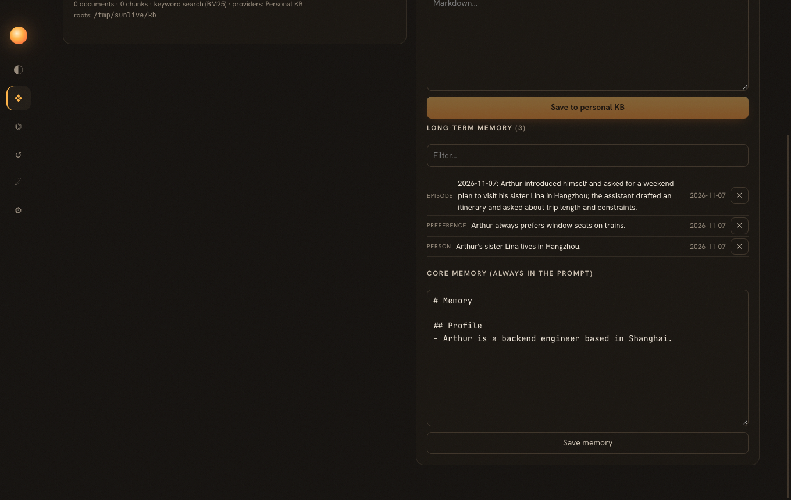
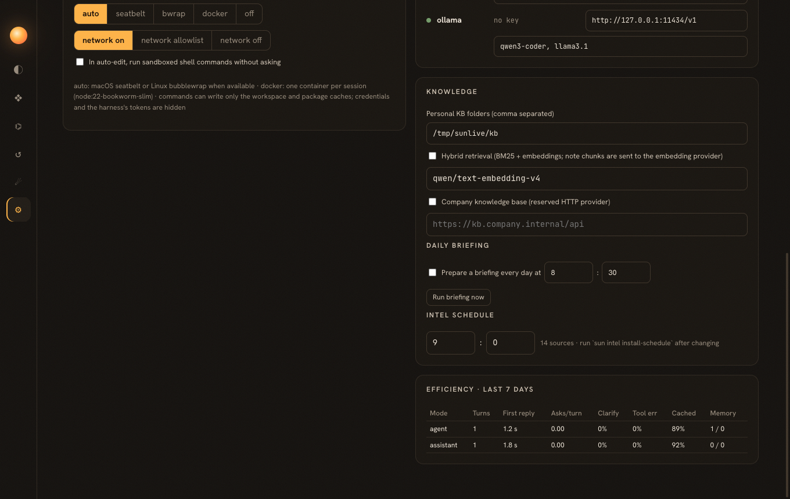

Optimization phase 5 · spec specs/024-assistant-efficiency.md
22 · Say less, wait less
An assistant's efficiency is measured in the user's effort: how much context they have to repeat, how often they are interrupted, how long they wait, whether it shows up without being asked. Phase 5 attacks each of those, and adds the instrument to see whether it worked.
Memory in two layers
Why not put recalled memories into the system prompt?
Because the system prompt is the start of the cached prefix: changing it every turn throws away the prompt cache built in phase 1. Recall is appended as a message right before the user's message instead. It is also logged, so a resumed or audited session shows exactly what the model was reminded of.
What went wrong in the first live test?
One turn ("I'm Arthur, my sister Lina lives in Hangzhou, I prefer window seats, plan a weekend") produced six long-term memories, including "may want Friday reminders" and sightseeing "lessons": the extractor stored the assistant's suggestions as the user's facts. Adding "only what the user said or confirmed, never guesses" to the extraction prompt gave exactly two facts, one core profile line, and the episode. The second conversation recalled the seat preference without being told.
Why did a shopping task get reminded of the user's sister?
The live gateway test sent "open the shop in the browser, search for a lamp, add it to the cart" in Agent mode, and recall attached "Arthur's sister Lina lives in Hangzhou". The match was on in, the and for: with only three memories, BM25 gives every word a high inverse document frequency, so function words count. Dropping English function words removed the false recall; since every remaining match is now a content word, the score threshold went down from 0.5 to 0.2 so that a single shared name still recalls. A light stemmer then made "book a train" find "prefers window seats on trains" (score 1.36, ranked first).

Spend strong models only where needed
Sessions on the auto model are routed per request: code, stack traces, long or analytical requests (English and Chinese keywords), and runs that are struggling (tool errors, many steps) go to the strong model; everything else to the fast one. The concrete model is what the log records. Housekeeping such as memory extraction uses router.background, typically the cheapest model.
Reach the user's real systems
DingTalk is used through its own CLI (dws), which already wraps calendar, todo, chat, mail, docs, approvals and more. Two tools split it by effect: dingtalk_read refuses anything that is not clearly read-only (an unknown verb counts as a write), and dingtalk_write passes approval. Both are offered only after dws auth status reports a login, and both are untrusted sources: messages from other people can carry injections too. Email and calendars come through MCP presets that are marked untrusted when added.
Show up without being asked
Webhook payloads are external content by definition: they are scanned and wrapped before the session starts, and the taint is logged first, so the phase 4 policy applies from the first step.
The fastest input is speech
Electron's Web Speech recognition needs Google keys. What then?
Record with MediaRecorder in the renderer, send the audio to the host, and transcribe with a model the user already has: DashScope's qwen3-asr-flash accepts input_audio in its OpenAI-compatible chat API (tested: a say-generated clip came back verbatim), and OpenAI-compatible Whisper endpoints work too. ffmpeg re-encodes browser webm/opus to 16 kHz MP3 when needed. Replies are read aloud with the OS voices through speechSynthesis; no service needed. The main process grants only audio media permission, and the packaged app declares why it wants the microphone.
Measure the conversation
sun metrics and Settings → Efficiency compute, per mode: turns per session, median time to first reply and per turn, tool calls and errors per turn, approval prompts per turn (interruptions), denial rate, clarify rate (answers that are questions back), tokens per turn, cache share, memories recalled and extracted. These are the numbers that tell whether memory reduced repetition and the sandbox reduced interruptions.

The whole optimization plan, measured
| Run | Model | Pass | Edit failures | Tool errors | Input tokens | Cached |
|---|---|---|---|---|---|---|
| baseline | qwen-flash | 55.6% | 40.6% | 25.8% | 4.9 M | — |
| phase 1a | qwen-flash | 69.4% | 20.0% | 7.7% | 8.3 M | 0% |
| phase 1 + sandbox | qwen-flash | 61.1% | 7.0% | 3.6% | 9.8 M | 70.0% |
| all phases, before loop breakers | qwen-flash | 63.9% | 38.9% | 23.7% | 14.0 M | 95.1% |
| final (loop breakers) | qwen-flash | 66.7% | 8.5% | 4.5% | 13.6 M | 95.5% |
| baseline (2 runs) | deepseek-chat | 100% / 97.2% | 0% | 0% | 1.8 M / 2.6 M | — |
| phase 1 (strict read rule) | deepseek-chat | 97.2% | 20.0% | 4.0% | 2.5 M | 90.7% |
| all phases, before loop breakers | deepseek-chat | 94.4% | 13.7% | 2.2% | 3.3 M | 91.7% |
| final (loop breakers) | deepseek-chat | 100% | 18.4% | 3.0% | 2.6 M | 89.9% |
| final + refusal hands over content | deepseek-chat | 100% | 8.1% | 1.3% | 4.8 M | 93.8% |
On the weak model the harness alone moved the pass rate from 55.6% to 66.7%, tool errors from 25.8% to 4.5% and edit failures from 40.6% to 8.5%. The strong model stays at the ceiling (100%, twice). Raw input tokens grew because more runs keep working instead of dying early and because the done gate adds rounds, but 90–96% of input is now served from the prompt cache. The baselines predate cache accounting, so their cache share is unknown; what is known is that the final runs pay full price for only 0.3–0.6 M input tokens. Single runs of a weak model move by ±3 tasks, which is why error rates and token counts sit next to the pass rate.
Efficiency is the user's effort, not the model's speed. Remember what they said, interrupt only when it matters, come to them at the right time, and count all of it.